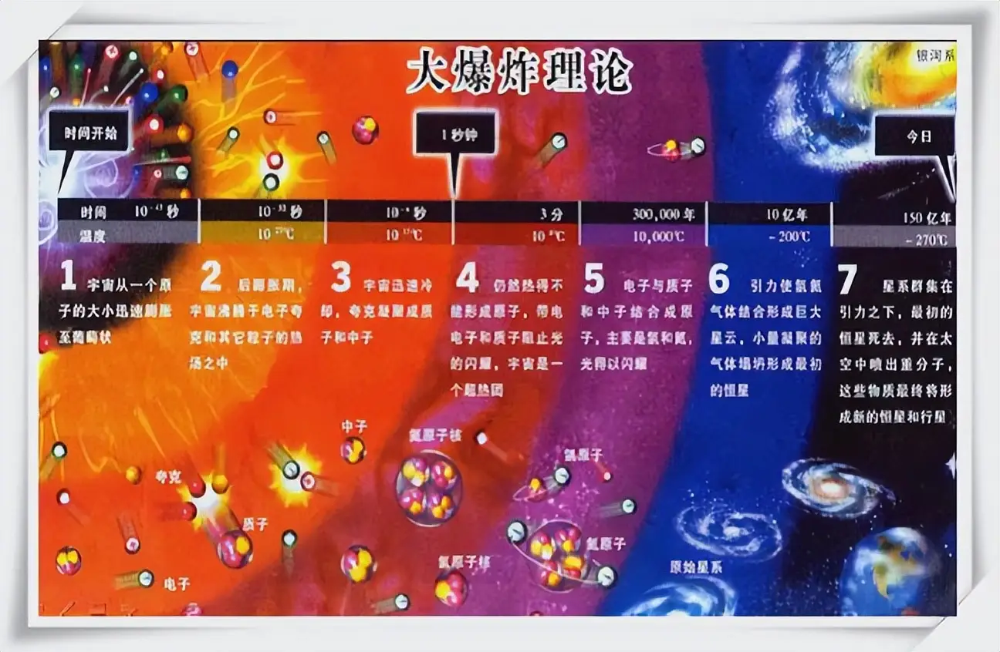

● 宇宙大爆炸(The universe big bang,又名:大爆炸宇宙论)是比利时天文学家和宇宙学家勒梅特(Georges Lematre)于1927年首次提出的一种假说 ,是现代宇宙学中最有影响的一种学说,它的主要观点是认为宇宙曾有一段从热到冷的演化史, 在这个时期里,宇宙体系在不断地膨胀,使物质密度从密到稀地演化,如同一次规模巨大的爆炸. 查看原文

大约46亿年前,太阳系所在的区域是一个巨大的分子云，主要由氢、氦和少量重元素组成。 在自身引力作用下，分子云开始坍缩，形成一个旋转的盘状结构，称为太阳星云。
在太阳星云的外围，尘埃和气体颗粒在引力和静电作用下逐渐聚集，形成直径几厘米到几公里的小天体，称为星子。 这些星子通过碰撞和吸积不断增大，逐渐形成直径数百公里到数千公里的行星胚胎。
在吸积过程中，地球内部的温度逐渐升高，物质开始熔化并发生分层。 重的元素（如铁、镍）沉向中心，形成地球的内核，而轻的元素（如硅、铝）则形成地壳和地幔。
大约在地球形成后的几亿年里，太阳系中残留的小行星和彗星频繁撞击地球，这一时期被称为晚期重轰炸期。 这些撞击带来了大量的水和有机化合物，为地球后来的生命起源提供了条件。
地球早期的大气主要由火山喷发释放的气体（如二氧化碳、水蒸气、氨气和甲烷）组成。 随着地球冷却，水蒸气凝结成云，形成降雨，逐渐形成了最初的海洋。
随着地球内部的放射性元素衰变产生的热量驱动地幔对流，地球的地壳逐渐稳定，板块构造运动开始，进一步塑造了地球的表面形态。
宇生说
宇宙生命论
化学起源说
这一假说认为,地球上最早的生命或构成生命的有机物，来自于其他宇宙星球或星际尘埃。 持这种假说的学者认为，某些微生物孢子可以附着在星际尘埃颗粒上而落入地球，从而使地球有了初始的生命。
这一假说提倡“一切生命来自生命”的观点，认为地球上最初的生命来自宇宙间的其他星球,即“地上生命,天外飞来”。 这一假说认为,宇宙太空中的“生命胚种”可以随着陨石或其他途径跌落在地球表面,即成为最初的生命起点.
化学起源说是被广大学者普遍接受的生命起源假说。 这一假说认为，地球上的生命是在地球温度逐步下降以后，在极其漫长的时间内，由非生命物质经过极其复杂的化学过程，一步一步地演变而成的。
化学起源说将生命的起源分为四个阶段(米勒实验)
悬停查看地球形成过程